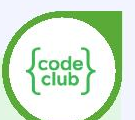
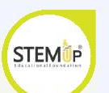
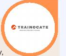
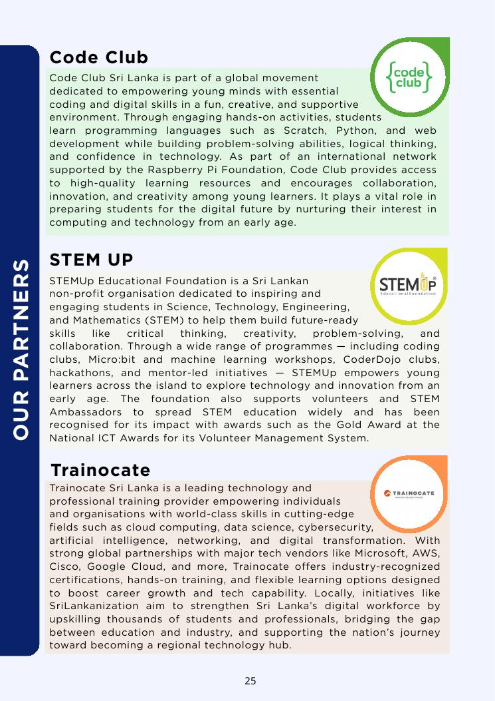

Code Club Sri Lanka
Coding & Digital SkillsPart of a global movement empowering young minds through Scratch, Python and web development, with hands-on learning that builds problem-solving, logical thinking and confidence.
Educational and industry connections that help create meaningful learning opportunities for our students.
Our newsletter highlights organisations supporting coding, STEM, professional technology skills and student development.

Part of a global movement empowering young minds through Scratch, Python and web development, with hands-on learning that builds problem-solving, logical thinking and confidence.

A Sri Lankan non-profit organisation inspiring students in Science, Technology, Engineering and Mathematics through coding clubs, Micro:bit, workshops, CoderDojo and hackathons.

A technology and professional training provider covering cloud computing, data science, cybersecurity, AI, networking and digital transformation.
SEF supports students through financial assistance, learning resources, technology support, accommodation assistance and project funding, including support for STEM, Robotics, Mechatronics and English programmes.
The newsletter references the University of Moratuwa in programme resources and academic support, including Python for Beginners and Web Design for Beginners.

Explore our programmes and find a learning path that fits your goals.
Explore Programs →